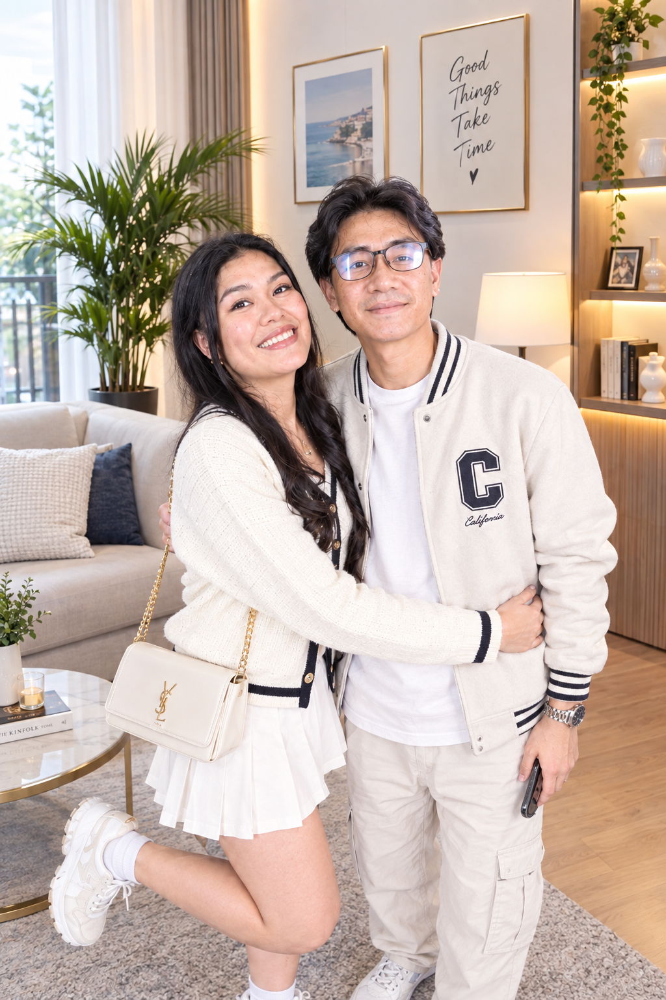

A Little Surprise For You

Happy Birthday,Sayank.
Hari ini bukan hanya tentang bertambahnya usia, tetapi tentang merayakan seseorang yang begitu berarti.
00Hari
00Jam
00Menit
00Detik
A Little Surprise For You

Hari ini bukan hanya tentang bertambahnya usia, tetapi tentang merayakan seseorang yang begitu berarti.
Make a Wish
Tutup mata sejenak, pikirkan satu doa yang paling kamu inginkan. Lalu nyalakan kembali cahaya kecil ini.
Selfie Studio
Ambil potretmu. Hasilnya akan muncul di bawah, bisa dilihat penuh, dihapus jika kurang cocok, atau disimpan ke galeri lalu dikosongkan dari sesi potret.
Saved Portrait Story
Setiap potret tersusun sebagai potongan cerita yang bisa kamu unduh atau hapus satu per satu.
Our Memories
Beberapa momen sederhana yang membuat perjalanan ini terasa istimewa.
Love Letter
One Last Thing
Semoga setiap langkahmu dipenuhi damai, sukacita, kesehatan, dan orang-orang yang tulus menyayangimu. Terima kasih sudah menjadi bagian indah dari cerita ini.